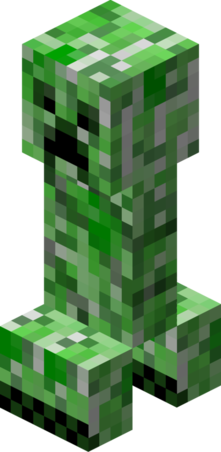

| Name | Mobs | Abilities | Hostile or Friendly? | Tameable? | Biome |
|---|---|---|---|---|---|
| Llama | Spitting; only when provoked (except with wolves) Storage; you can add a chest to a llama and it will carry all of your items. |
Both; a llama is friendly when unprovoked by a player. | Yes, a llama can be tamed by riding on it until hearts appear. | Windswept hills, savanna plateau, and savanna | |
| Enderman | Building; endermans can take blocks and place them on top of one another and build certain items. Physical destruction; even from built homes an enderman will unintentionally take blocks. Teleportation; endermans can teleport anywhere except on water or soul sand. |
Both; an enderman won’t attack a player in the daytime but will attack if provoked or when you turn your back after staring directly in their eyes. | No, an enderman is untameable. | Overworld, Nether(rare), End, or any other biome. | |
| Wolf | Teleportation; when a wolf is tamed by its owner it can teleport to its owner when not in a seated position. | Both; when tamed wolves become pets and are passive, they’re hostile when provoked or hungry. | Yes, a dog can be tamed by giving it a bone. | Taigas, groves, old growth taigas, and snowy taigas. | |
| Creeper |  | Absorption; when struck by lightning, the creeper can become a charged creeper Explosion; creepers are filled with gun powder so this basically makes them a ticking time bomb. Physical destruction; since creepers are explosive they can easily physical damage to builds or any surrounding areas. |
Hostile; it will silently approach the player and explode. | No, a creeper cannot be tamed. | Mainly overworld biomes with 0 light level except mushroom fields and deep dark biomes. |
| Ghast | Fall damage immunity; a ghast cannot take any fall damage because of its ability to fly. Fire Immunity; since a ghast's habitat is in the nether known for having fire this makes the ghast resistant to fire. Explosions; ghasts shoot fireballs from their mouths and once they land near or on you, they explode. Levitation |
Hostile; when in range, a ghast can shoot fireballs every 3 seconds. | A ghast cannot be tamed. | Basalt deltas, nether wastes, and soul sand valley | |
| Ocelot | Stealth; ocelots will sneak and stalk their prey before they go hunt it down. Fall damage immunity; ocelots try to avoid fall damage but ironically they can't take any fall damage. |
Friendly; they usually run away from the player but will approach if the player has food. | Yes, an ocelot can be tamed by feeding it raw cod or salmon. | Mainly seen in jungle biomes. | |
| Ender Dragon | Damage immunity; ender dragons land on a portal which makes them immune to arrow damage. Fall damage immunity; since this is a dragon it has wings which makes it ale to fly and avoid fall damage. Fire immunity; fire is one of the things the end dragon is immune to, it catches the fire and bounces off. |
Hostile; this is one of the bosses of the game. | No, an ender dragon cannot be tamed. | Only found in the End; which you can get to through by making a portal. |